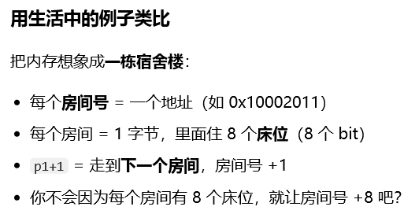

（一）结构体定义与使用
struct Student {
int id;
char name[20];
int score;
};
struct Student s = { 1001, "张三", 92 };
struct Student *ps = &s;
printf("%d\n", ps->score); /* 指针用 ->，变量用 . */结构体变量之间可以直接赋值（整体拷贝），但不能直接用 == 比较，需逐成员比较或用 memcmp（注意填充字节）。
（二）内存对齐：先找对齐值，再逐成员排，最后整体补齐
sizeof(struct) 常常大于成员大小之和，因为编译器要保证每个成员落在"对齐"的地址上。
理解对齐之前先记住一句话：内存地址是按"字节"编号的，不是按"位"编号的。每个地址对应 1 个字节（8 个 bit），p + 1 是走到下一个字节，不是走 8 个 bit。

算大小只需三步，顺序不能乱：
- 先找对齐值：结构体的对齐值 = 所有成员对齐值中的最大值。单个成员的对齐值通常等于自身大小（
char1、short2、int4、double8，指针按平台字长）；数组按元素类型算，嵌套的结构体成员按它自己的对齐值算。 - 再逐成员排：每个成员的起始偏移必须是"自身对齐值"的整数倍，不够就在该成员前面填空洞（padding）。
- 最后整体对齐：总大小必须是"最大对齐值"的整数倍，不够在尾部补齐 —— 这样结构体数组里每个元素才都对齐。
同样三个成员，换个顺序就差 4 字节：
struct A { char c; int i; short s; }; /* 12 字节 */
struct B { int i; short s; char c; }; /* 8 字节 */struct A（char → int → short）的排布：
| 成员 | 大小 | 对齐 | 偏移 | 说明 |
|---|---|---|---|---|
c | 1 | 1 | 0 | 占第 0 字节 |
| 填充 | 3 | — | 1~3 | 让 i 从 4 的倍数开始 |
i | 4 | 4 | 4 | 占 4~7 |
s | 2 | 2 | 8 | 占 8~9 |
| 填充 | 2 | — | 10~11 | 尾部补到 12（4 的倍数） |
struct B（int → short → char）的排布：
| 成员 | 大小 | 对齐 | 偏移 | 说明 |
|---|---|---|---|---|
i | 4 | 4 | 0 | 占 0~3 |
s | 2 | 2 | 4 | 占 4~5 |
c | 1 | 1 | 6 | 占第 6 字节 |
| 填充 | 1 | — | 7 | 尾部补到 8（4 的倍数） |
这就是"成员顺序改变结构体大小"的由来：字段没变、逻辑没变，只调了声明顺序，sizeof 就可能差几字节。
- 优化手段：成员按对齐值从大到小排，填充自然最少。工程上把
int、指针、double放前面，char、short放最后。 - 别手算写死长度：用
sizeof取长度、用offsetof（<stddef.h>）验偏移；换平台或换编译器时，long、指针、double的对齐要求都可能变。 - 一行代码守住布局：
_Static_assert(sizeof(struct A) == 12, "layout changed");，布局一旦被改动，编译期就报错，比运行期踩内存好排查得多。 - 紧凑布局有代价：通信协议与二进制文件要求无填充时可用
#pragma pack(1)（或__attribute__((packed))），但成员可能落在非对齐地址 —— ARM 上直接取址会 fault 或明显变慢，逐字节序列化才是可移植做法。 - 比较陷阱：
memcmp比较结构体会连填充字节一起比，字段完全相同的两个变量也可能"不相等"；务必逐字段比较。
（三）共用体：所有成员共用一块内存
union 的成员共享同一段内存，任一时刻只有一个成员"有效"。它的对齐规则与结构体同源，也是先找对齐值，再定大小：
- 对齐值：取成员中最大的对齐值，与结构体一致。
- 大小：不小于最大成员的大小，且必须是"对齐值"的整数倍（向上取整）。
三行代码最能说明问题：
union U1 { char c[5]; int i; }; /* 最大 5，对齐 4 → 8 字节 */
union U2 { char c[8]; int i; }; /* 最大 8，对齐 4 → 8 字节 */
union U3 { char c[5]; }; /* 最大 5，对齐 1 → 5 字节 */union U1 的布局（共 8 字节，c 与 i 从同一地址开始）：
| 成员 | 占几字节 | 落在哪些位置 |
|---|---|---|
c[5] | 5 | 第 0~4 字节 |
i | 4 | 第 0~3 字节（与 c[0]~c[3] 重叠） |
| 尾填充 | 3 | 第 5~7 字节（补到 4 的倍数） |
注意最后一个坑：union 大小不等于"最大成员大小"。char c[5] 配 int 是 8 而不是 5，按 5 开缓冲区就会写越界。
- 经典用法：判断大小端（同一段字节的两种解释）：
#include <stdio.h>
int main(void)
{
union { unsigned int i; unsigned char b[4]; } u;
u.i = 1;
if (u.b[0] == 1) printf("小端\n"); /* 低位字节放在低地址 */
else printf("大端\n");
return 0;
}- 写一个成员、读另一个成员在 C 里合法，但结果依赖字节序与填充；填充字节的值不确定，所以别把含
union的结构体整体memcmp或直接写文件后跨平台读。 - 标签联合体（tagged union）是
union最常见的正经用法：一个enum kind标明当前哪个成员有效，再配一个union value存数据。必须先读 kind 再读 value，否则读到的是另一个成员的字节。 - 成员里含结构体时，对齐值按那个结构体的对齐值算：
union U4 { struct A a; char buf[3]; };的大小是 12，不是 3。
（四）枚举：名字比数字好，但管不住取值
enum 给一组整型常量起名，用来替代魔法数字。默认从 0 开始递增，也可以显式赋值，值允许不连续。
enum Color { RED, GREEN = 5, BLUE }; /* RED=0, GREEN=5, BLUE=6 */
enum Color c = BLUE;关键一点：枚举变量并不会被限制在"定义过的那些值"里。 C 的 enum 本质上是某个能容纳全部枚举值的整型（通常是 int），标准不要求编译器做任何取值范围检查：
enum Color c = (enum Color)100; /* 合法，能编译、能运行 */
c = 3; /* C 里也合法（C++ 需显式转换） */
printf("%d\n", c); /* 输出 3，虽然 3 没有名字 */这不是编译器漏了检查，而是设计取舍：enum 是"给人和调试器看的名字集合"，不是"受限取值的数据类型"。由此带来几条实践约束：
- 不要假设
switch的default不可达：来自文件、网络、scanf、argv的整型赋给枚举变量后，任何值都可能出现，default必须处理。 - 别直接拿枚举变量当下标：
table[c]会越界。先校验再使用：
if (c < RED || c > BLUE) { /* 非法值，按错误处理 */ }sizeof(enum)由实现决定（常见为 4 字节），需要固定宽度就改用int32_t/uint8_t，C23 也支持enum Color : uint8_t指定底层类型，别依赖默认大小。- 相比
#define的优势：有作用域、参与类型检查、调试器里能显示名字、可自动连续编号。位标志（1、2、4、8）不适合用普通枚举，直接写1u << n更清楚。
（五）typedef
typedef 为已有类型起别名，简化书写并提升可移植性：
typedef struct Node {
int data;
struct Node *next; /* 自引用必须用指针 */
} Node;